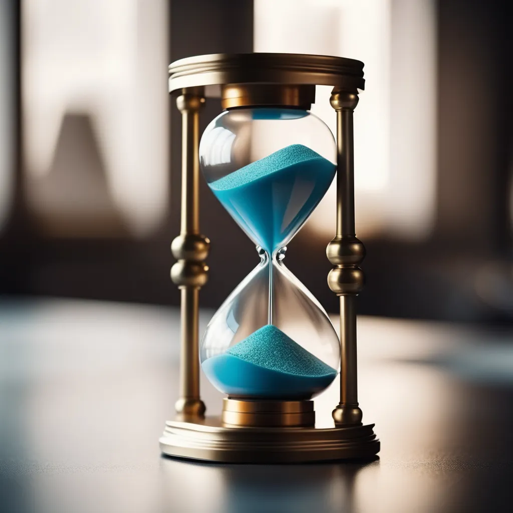
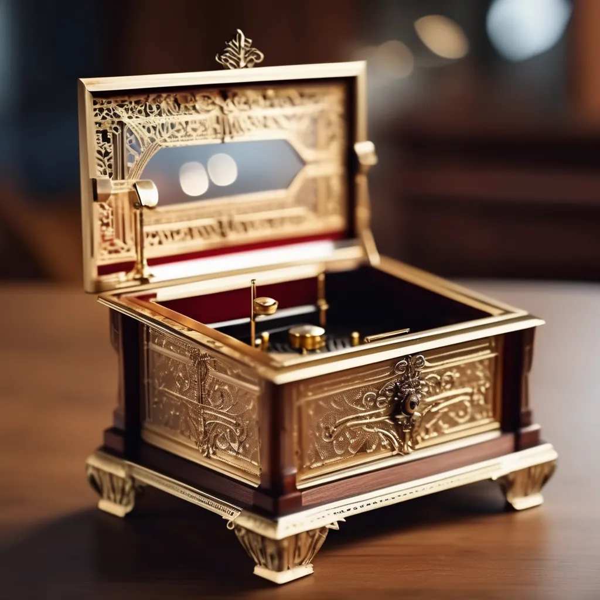
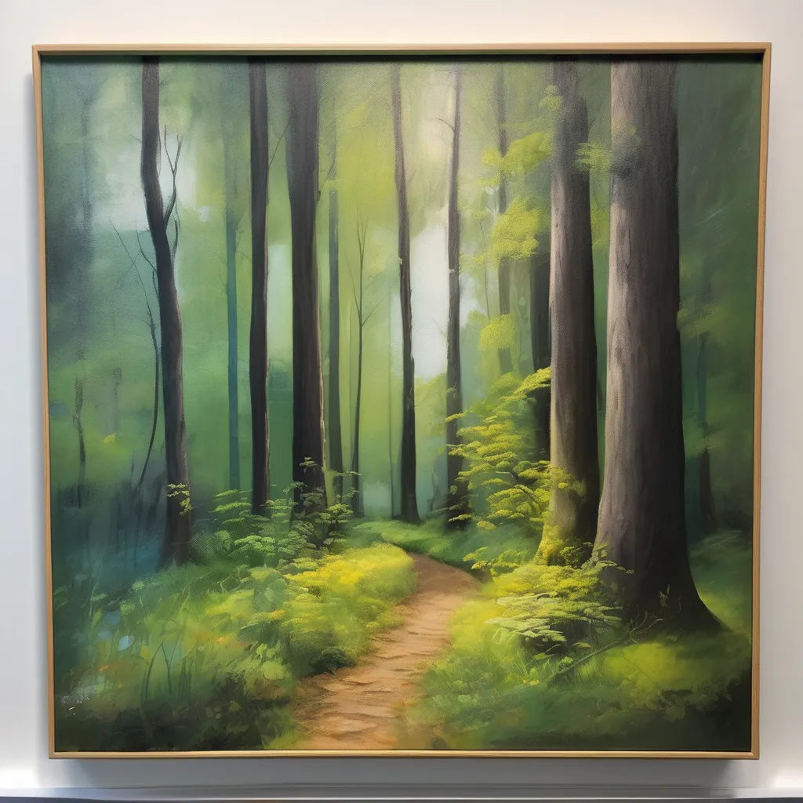

no-one believed in them, but here they are
lots

The Enchanted Hourglass
Step into a realm of magic with this exquisite hourglass, crafted from shimmering crystal and enchanted with ancient runes. As time flows through it, the sand transforms into sparkling stardust, symbolizing lost moments and dreams yet to be fulfilled. This one-of-a-kind piece not only serves as a stunning decorative item but also invites you to pause and reflect on the beauty of time itself. Perfect for collectors of mystical artifacts or those seeking a unique conversation starter.

Victorian-Era Music Box
Step back in time with this exquisite Victorian music box, intricately carved from mahogany and adorned with brass accents. When wound, it plays a delicate rendition of "Clair de Lune," transporting you to a bygone era. Measuring 6 inches in width, it's an elegant decor piece that whispers stories of the past. Ideal for music enthusiasts and vintage collectors.

The Whispering Woods Painting
Immerse yourself in the serene beauty of "Whispering Woods," a breathtaking oil painting by renowned artist Elara Dune. This vibrant landscape captures a magical forest at twilight, where the trees seem to breathe and the leaves rustle with secrets. Each brushstroke tells a story, drawing you into a world of tranquility and wonder. Ideal for art lovers or anyone wishing to bring a touch of enchantment into their home, this piece will become the centerpiece of any room.
more